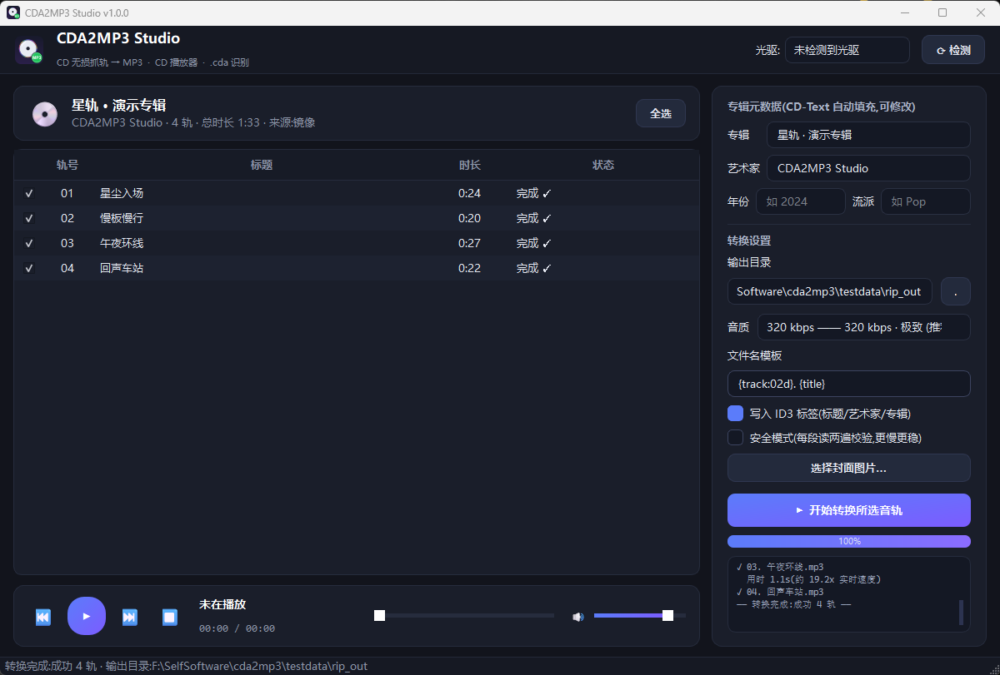

一个 Windows 单文件工具,搞定音频 CD 的所有事:SPTI 无损抓轨转 320kbps MP3、实时 CD 播放器、全网都在踩坑的 .cda 文件智能识别。

抓轨、播放、识别,一个窗口全部完成
插入 CD 自动识别,播放/暂停/切轨/进度拖动/音量调节,后台预读不卡顿。
SPTI 直读光驱原始 2352 字节音频扇区,LAME 编码 320kbps,实测 20–50× 实时速度。
拖入 .cda 快捷方式即可解析轨号与时长;放入原盘自动衔接,一键抓取。
自动读取专辑/艺术家/曲目名(支持中文),可编辑,写入 ID3v2.3 并支持嵌入封面。
每段音频双读逐字节校验,划痕盘安心抓,坏段明确报错不静默。
没有光驱也能玩:CUE + WAV/BIN 整轨镜像当作虚拟光盘,抓轨播放全功能。
全网无数人踩过的坑,一次讲清
Windows 为音频 CD 的每一轨生成一个 .cda 索引文件,里面只有轨号、起始扇区、时长等元信息, 连 1 字节的声音数据都没有。所以任何软件都无法"直接"把 .cda 转成 MP3 —— 真正的声音只存在于 CD 盘片上。
CDA2MP3 Studio 的解法:解析 .cda 拿到音轨清单 → 放入原版 CD → 自动比对 TOC 衔接 → 从光驱抓取原始音频 → 编码 MP3。桌面上那堆"打不开"的 .cda,拖进来就对了。
不需要安装任何东西
CDA2MP3Studio.exe,双击运行(SmartScreen → 更多信息 → 仍要运行)。:: 也支持命令行整盘抓取 CDA2MP3Studio.exe --rip --out "D:\Music\我的CD" --bitrate 320 :: 处理 CUE/WAV 镜像(无需光驱) CDA2MP3Studio.exe --image album.cue --rip